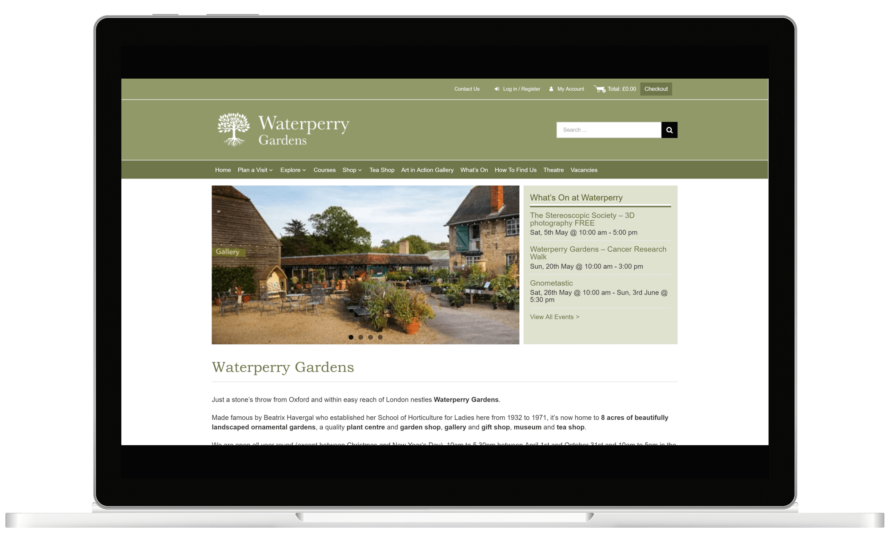

Waterperry Gardens is the home to 8 acres of beautifully landscaped ornamental gardens, a plant centre, a garden shop, a gallery, a gift shop, a museum and a tea shop. The gardens are located in Oxfordshire and are welcoming annually thousands of visitors.
As a previous Easitill customer, the company already had an eCommerce website built on an older platform but wished to do a conversion to WordPress so that the staff can manage the content in a simpler manner.
